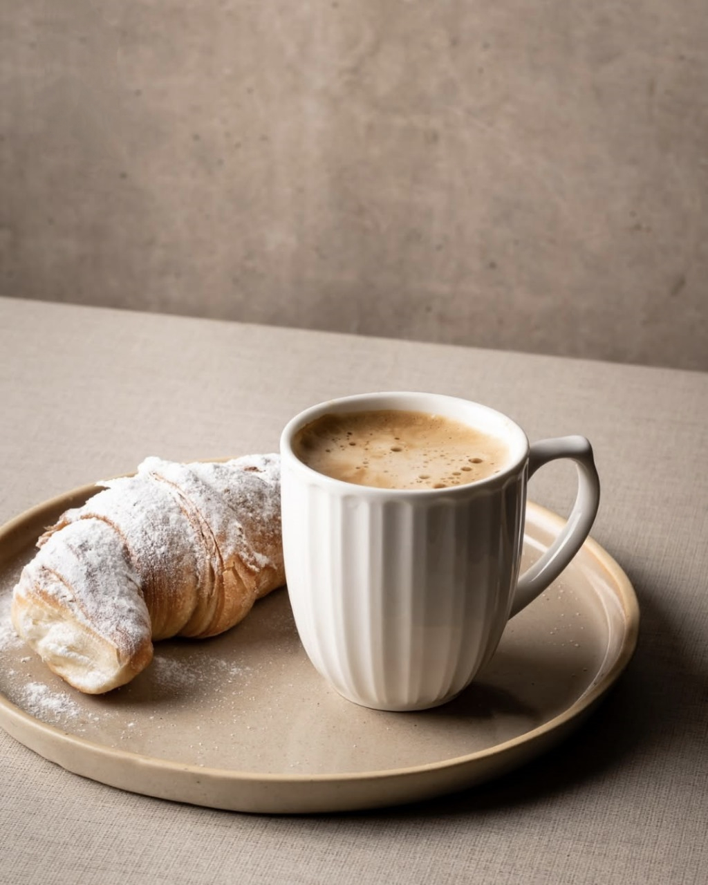
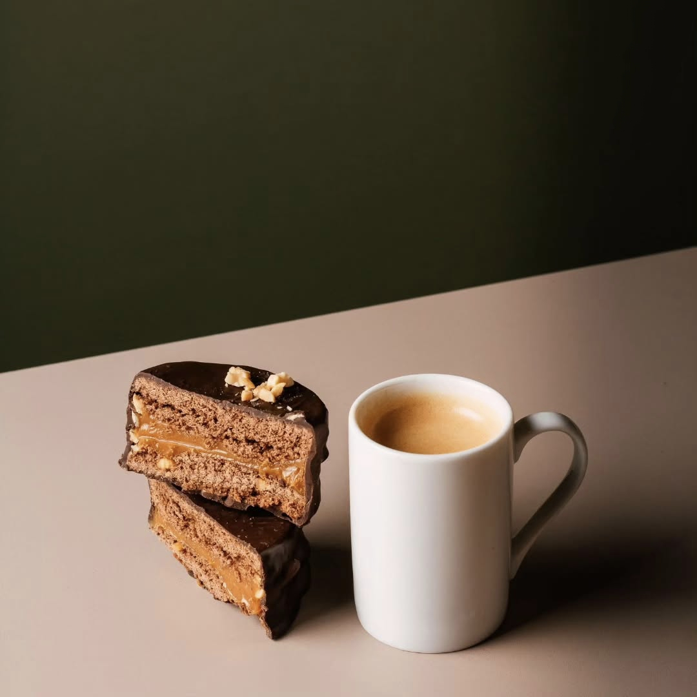
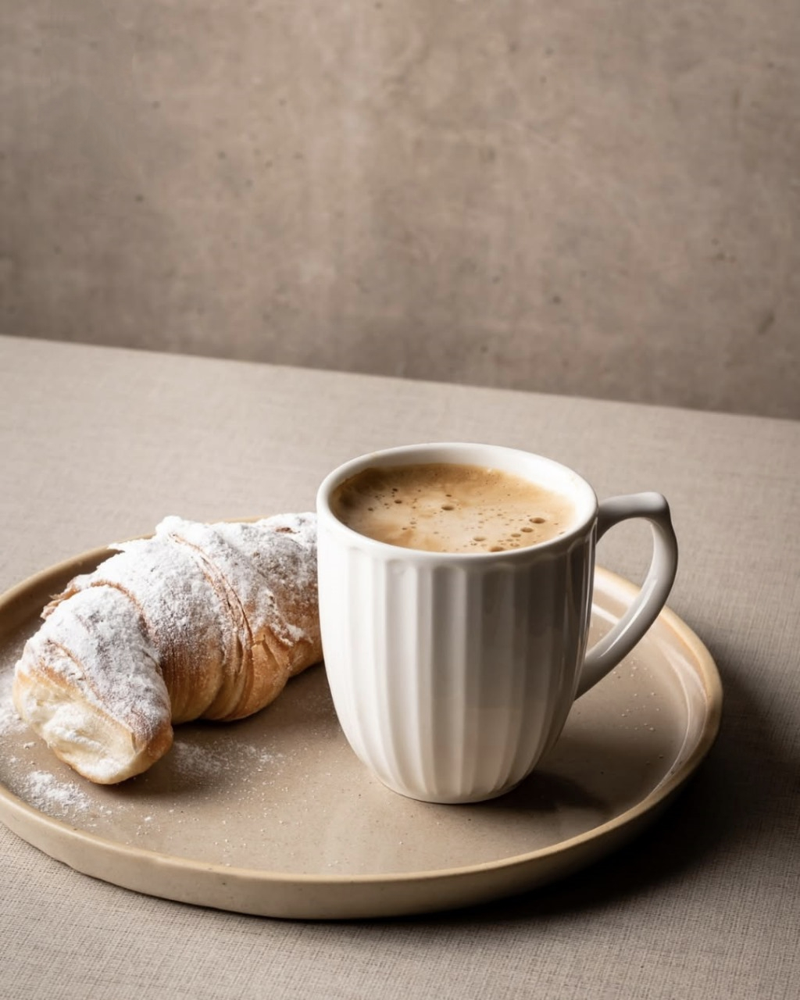
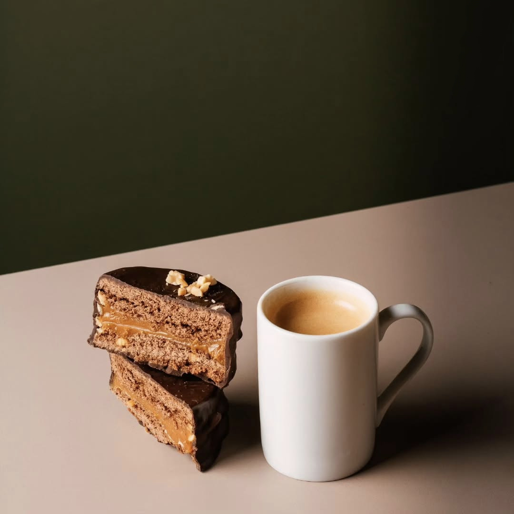
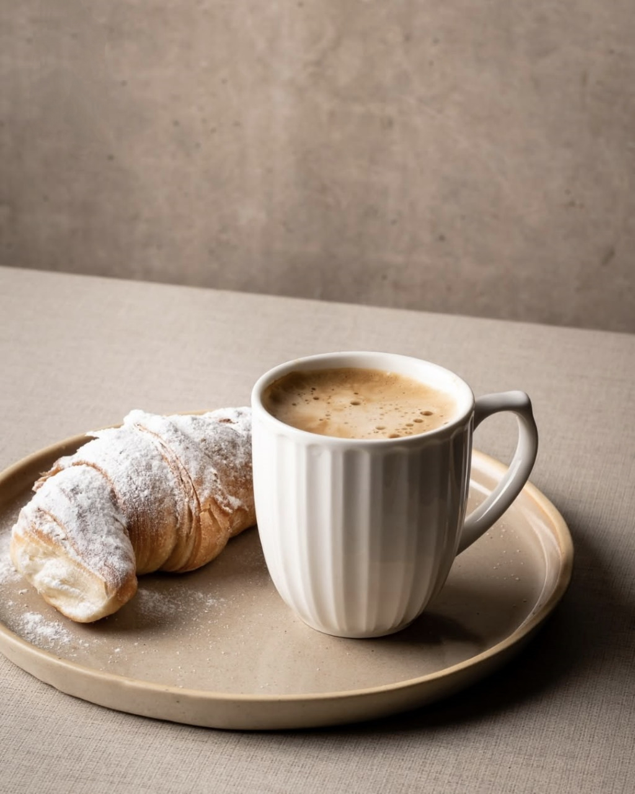
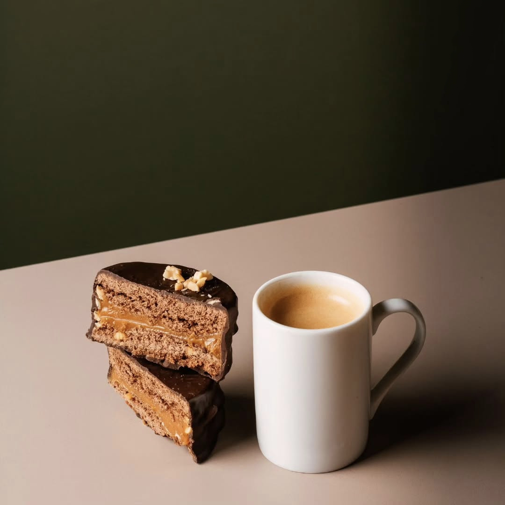

Moka nació en 2025, en el corazón de Tucumán, como nacen las buenas ideas: entre charlas, café y ganas de crear algo distinto. Somos cinco personas muy diferentes entre sí, pero unidas por una pasión compartida: hacer que lo cotidiano tenga sabor a especial. Durante meses soñamos con este espacio. Pensamos en cada rincón, elegimos colores, probamos recetas, fallamos, aprendimos y volvimos a empezar. Queríamos algo más que una panadería: queríamos construir un lugar donde los aromas inviten a quedarse y donde cada detalle cuente una historia. En Moka creemos en lo artesanal, en lo visualmente cuidado y en el poder de los pequeños gestos. Amasamos como si fuera para alguien querido, diseñamos como si fuera nuestra casa y atendemos como nos gustaría ser recibidos. No tenemos un gran local ni vitrinas infinitas, pero sí tenemos algo que no falta nunca: ganas. Ganas de crear, de crecer, de mejorar, de sorprenderte. Porque para nosotros, cada día en Moka es una nueva oportunidad de hacer las cosas con amor. Y si llegaste hasta acá, ojalá nos conozcamos pronto. Te estamos esperando con pan calentito, medialunas y café recién hecho. Siempre.

